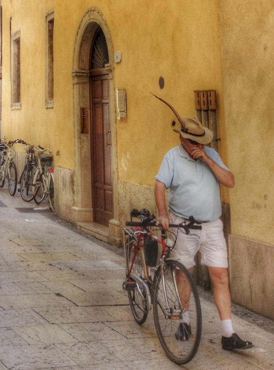

Photo by Francesca Tosolini
Driving a car in big Italian cities is not a very good idea since it is quite challenging. However, if you really want to experience the thrill of the drive, you may want to consider renting a scooter. Ask at the tourist office or at your hotel concierge. The bike is also a very good alternative because some cities, such as Verona or Lucca for example, are great to be explored on two wheels.
{This is an excerpt from chapter 1 “
Transportation” of the eBook “
Italy from the Inside. A native Italian reveals the secrets of traveling in Italy”}